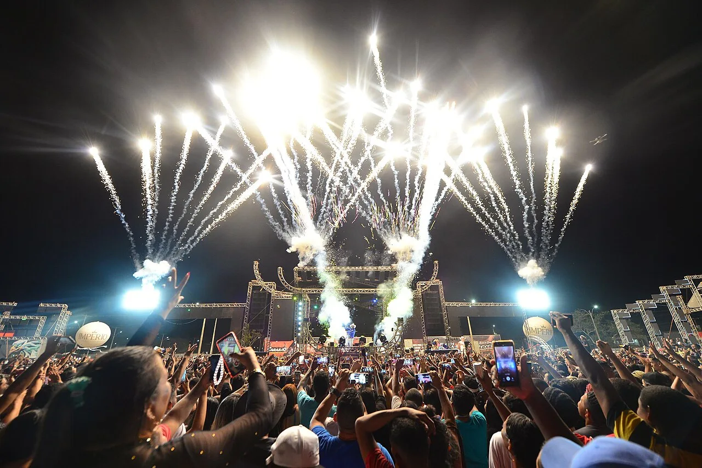
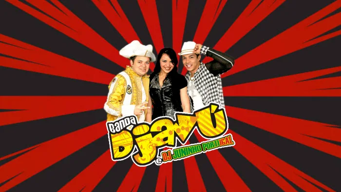

La fotografía de Carabao en Macapá muestra un montaje cuya presencia no termina en los altavoces: hay luces, estructura y efectos sobre una multitud. La aparelhagem aparece como un acontecimiento construido. El espectáculo necesita que sus piezas se monten, se coordinen y se reconozcan; la tecnología participa en una forma de reunión, además de cumplir una función de reproducción sonora.
Para comprender el circuito de Belém, un artículo de Hans Cleyton Passos da Costa, Fábio Fonseca de Castro y Marina Ramos Neves de Castro ofrece una entrada menos obvia que el inventario de equipos. Publicado en 2021, se apoya en nueve meses de observación durante 2016 y examina tres fiestas vinculadas a Superpop. Su análisis atiende al consumo de bebidas y de vestuario como parte de las relaciones entre asistentes. [1]
La precisión de esa muestra evita imaginar un público homogéneo. Una fiesta puede reunir a muchas personas sin que todas ocupen la misma posición ni busquen lo mismo. La ropa, las formas de agruparse y los objetos que se comparten intervienen en la experiencia. Mirar exclusivamente hacia el escenario deja fuera una parte de la producción estética que sucede frente a él.


La tesis de Ana Paula Mendes Pereira de Vilhena, presentada en la Universidade Federal do Pará en 2012, sigue a jóvenes de las llamadas equipes. La autora discute diferencias y superposiciones entre esa denominación, las galeras y los clubes de fans. En su trabajo, los nombres no funcionan como casillas perfectamente separadas: dependen también de cómo los participantes explican sus vínculos. [2]
Ese detalle tiene consecuencias para cualquier catálogo cultural. Si el investigador define primero una categoría y obliga después a que las personas encajen en ella, puede hacer desaparecer precisamente lo que intentaba comprender. En este caso, el grupo de asistentes merece atención como agente de la escena, no como una suma de consumidores que reciben pasivamente una propuesta tecnológica.
Desde el diseño, conviene separar tres escalas. El equipo necesita funcionar y poder montarse; la puesta en escena necesita una secuencia perceptible; la reunión necesita relaciones que hagan deseable volver. No son tres capas independientes que se añaden al final. Una transformación del montaje puede cambiar dónde se concentra la mirada y cómo se distribuye el espacio disponible.
La segunda imagen, una presentación gráfica de Banda Djavú y DJ Juninho Portugal, aporta otra operación: convertir personas y nombre en una unidad visual. La ficha describe el conjunto en 2010, aunque el archivo consigna una fecha posterior. No documenta una fiesta de Superpop. Permite observar cómo la imagen musical circula también mediante composiciones preparadas para ser reproducidas fuera del evento.


No hay una contradicción necesaria entre un circuito situado en las periferias y un interés por máquinas complejas. La asociación automática de cultura popular con una técnica elemental revela más sobre quien clasifica que sobre lo clasificado. Aquí la pregunta productiva es qué se hace con las herramientas y qué forma de prestigio o de encuentro permiten construir.
Tampoco conviene llamar underground a toda la escena como si careciera de escala comercial. Las investigaciones describen circuitos de consumo y diferenciación, con sus propias jerarquías. Que una práctica haya recibido menos atención de cierto público cultural no significa que sea pequeña para quienes la sostienen. La selección de RUMMOR busca esa diferencia de visibilidad, sin convertirla en una supuesta ausencia de negocio.
En las aparelhagens, la máquina no agota el proyecto: hay productores resolviendo un montaje y públicos construyendo afiliaciones, vestuario y presencia. Esa relación vuelve cultural a la tecnología. Seguir ambos lados permite reconocer una innovación que no depende solo de la novedad del aparato.
Fuentes.
- Costa, Castro y Castro — Consumo e socialidade nas festas de aparelhagem de Belém, Brasil, 2021
- Ana Paula Mendes Pereira de Vilhena — Eles são os considerados do setor, etnografía, UFPA, 2012
Lectura de dos investigaciones de campo realizadas por sus autores; RUMMOR no asistió a estos eventos. La fotografía de Carabao corresponde a Macapá, Amapá, en 2023; no ilustra los eventos de Belém estudiados en 2016.
Fuentes consultadas el 15.11.2026. Análisis e interpretación: RUMMOR. Edición privada para revisión.